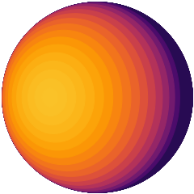
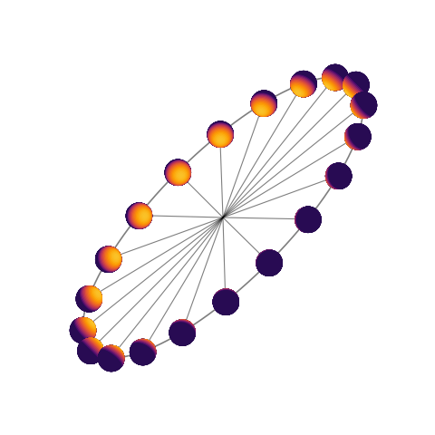

eyeball.py ¶
Code for plotting and visualizing “eyeball” planets.
-
planetplanet.photo.eyeball.DrawEyeball(x0=0.5, y0=0.5, r=0.5, radiancemap=<Numba C callback 'RadiativeEquilibriumMap.<locals>.func'>, theta=1.0471975511965976, nz=31, gamma=0, occultors=[], cmap='inferno', fig=None, draw_terminator=False, draw_ellipses=False, rasterize=False, cpad=0.2, limbdark=[1.0], teff=2500.0, wavelength=15.0, color=None)¶ Creates a floating axis and draws an “eyeball” planet at given phase and rotation angles.
Parameters: - x0 (float) – The x position of the center of the planet in figure coordinates
- y0 (float) – The y position of the center of the planet in figure coordinates
- r (float) – The radius of the planet in figure coordinates
- theta (float) – The phase angle of the eyeball in radians. Default \(\pi/3\)
- gamma (float) – The rotation angle of the eyeball in radians. Default 0
- nz (int) – The number of zenith angle wedges. Default 11
- occultors (array_like) – A list of
dictinstances with information on each of the occultors to draw. Each dictionary must have keywords x, y, and r, corresponding to the xy position and radius of the occultor, respectively. These are defined relative to the center of the planet and scaled so that the radius of the planet is unity. Optional keywords are zorder, color, and alpha. Default[] - cmap (str) – The name of the
matplotlibcolormap. Default inferno - fig (
matplotlib.Figure) – The figure object in which to create the axis. DefaultNone - draw_terminator (bool) – Draw the terminator ellipse outline? Default
False - draw_ellipses (bool) – Draw the zenith angle ellipse outlines? Default
False - rasterize (bool) – Rasterize the image? Default
False - color (str) – Occulted body outline color. Default
None
Returns: fig, ax, occ, xy. These are the figure and floating axis instances, a lits of
Circleinstances corresponding to each of the occultors, and a function xy that performs the rotation transformation into the axis-symmetric eyeball frame
-
planetplanet.photo.eyeball.DrawOrbit(radiancemap=<Numba C callback 'RadiativeEquilibriumMap.<locals>.func'>, inc=70.0, Omega=0.0, ecc=0.0, w=0.0, Phi=0.0, Lambda=0.0, nphases=20, size=1, draw_orbit=True, draw_orbital_vectors=True, plot_phasecurve=False, label_phases=False, figsize=(8, 8), **kwargs)¶ Draw an “eyeball” planet’s orbit on the sky, illustrating the changing phases over the course of the orbit.
Parameters: - inc (float) – The orbital inclination in degrees. Default 70.
- Omega (float) – The longitude of ascending node in degrees. Default 0.
- ecc (float) – The orbital eccentricity. Default 0.
- w (float) – The longitude of pericenter in degrees. Default 0.
- Phi (float) – The latitudinal hot spot offset in degrees. Default 0.
- Lambda (float) – The longitudinal hot spot offset in degrees. Default 0.
- nphases (int) – The number of planets to draw at different phases. Default 20
- size (float) – The size of the planets in arbitrary units. Default 1.
- draw_orbit (bool) – Draw the orbit outline? Default
True - draw_orbital_vectors (bool) – Draw the orbital radial vectors? Default
True - plot_phasecurve (bool) – Compute and plot the phase curve for one orbit? Default
False - label_phases (bool) – Label each of the phases? Default
False - figsize (tuple) – The size of the figure in inches. Default
(8, 8) - kwargs (dict) – Any other
kwargsto be passed toDrawEyeball()
Returns: fig, axes, and optionally figphase, axphase; these are all the figure and axes objects generated by the function
-
planetplanet.photo.eyeball.GetAngles(x, y, z, vx, vy, vz, Lambda=0.0, Phi=0.0)¶ Computes the eyeball angles \(\theta\) and \(\gamma\) given the Cartesian orbital elements and the hotspot offset angles \(\Lambda\) and \(\Phi\).
Parameters: - x (float) – The x component of the planet’s position vector
- y (float) – The y component of the planet’s position vector
- z (float) – The z component of the planet’s position vector
- vx (float) – The x component of the planet’s velocity vector
- vy (float) – The y component of the planet’s velocity vector
- vz (float) – The z component of the planet’s velocity vector
- Lambda (float) – The longitudinal hotspot offset in radians. Default 0
- Phi (float) – The latitudinal hotspot offset in radians. Default 0
Returns: \(\theta\) and \(\gamma\), the eyeball phase angles, in radians